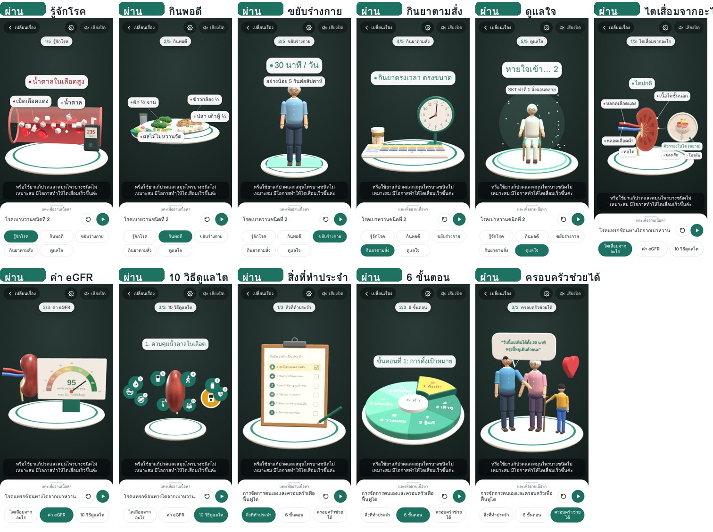
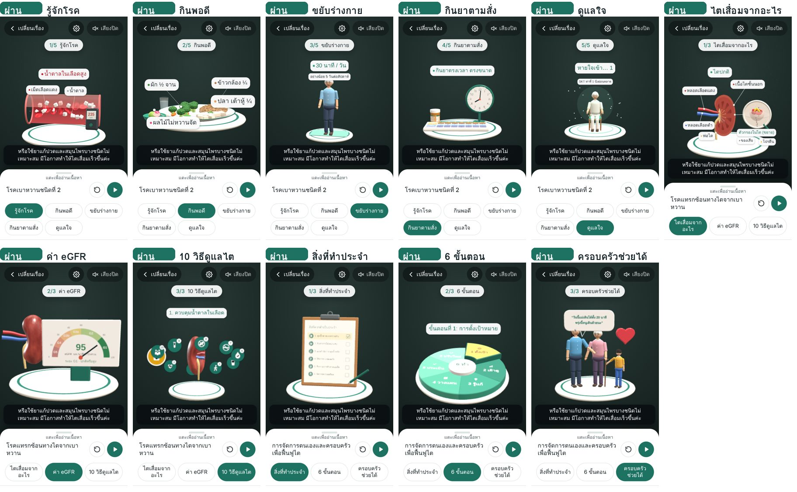
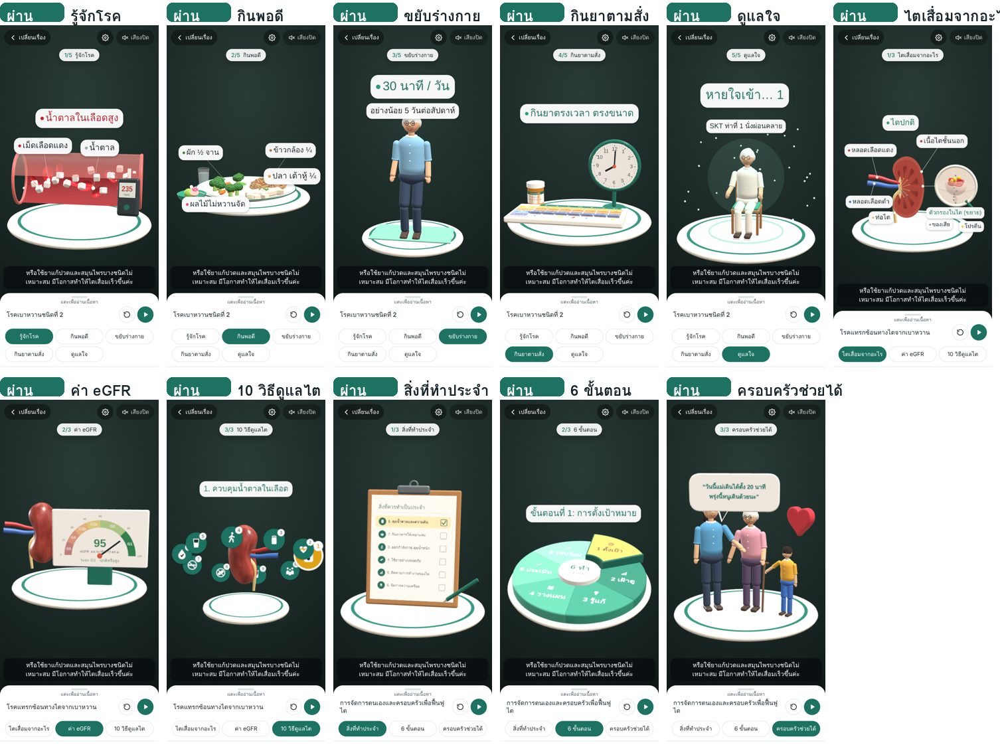

รายงาน QC — รอบตรวจที่ 1
ผ่าน QCพร้อมให้ตรวจรับ เหลือรายการที่ต้องตัดสินใจด้านเนื้อหา (ไม่กระทบการใช้งาน)
สิ่งที่เปลี่ยนในรอบนี้
- มุมมองโมเดลตั้งตรงแบบ 3/4 จากด้านบนเล็กน้อย หมุนช้า ๆ แล้วกลับมาหันหน้าตรงเอง
- ย่อขยายฉากให้พอดีจออัตโนมัติ โดยนับป้ายชื่อด้วย ไม่ล้นขอบจอทั้ง 3 ขนาดจอ
- แท่นวางปรับขนาดตามวัตถุ ทำให้วัตถุหลักใหญ่ขึ้น
- ป้ายในภาพ 3 มิติคมชัดขึ้น จัดตำแหน่งใหม่ไม่ซ้อนกัน (ฉากไต ฉากเลือด จานอาหาร ครอบครัว)
- แถบหัวข้อแสดงครบทุกชื่อ (ขึ้นบรรทัดใหม่แทนการเลื่อน) และมีป้ายบอกลำดับ เช่น 2/5 กินพอดี
- คำบรรยายยาวแบ่งเป็นช่วงสั้นตามจังหวะเสียง ไม่เกิน 3 บรรทัด
- แผงด้านล่างสูงพอดีกับเนื้อหา
- ป้ายด้านบน (ลำดับหัวข้อ / พบภาพแล้ว / คำแนะนำการหมุน) เรียงเป็นชั้น ไม่ทับกัน
- เพิ่มเครื่องมือ QC อัตโนมัติ (tools/qc.py) และรายงาน QC
สรุปผลตรวจ 5 หมวด
| หมวด | เกณฑ์ | ผล | รายละเอียด |
|---|---|---|---|
| 1. ระบบ | ไม่มีข้อผิดพลาดของโปรแกรม และทุกไฟล์โหลดได้ | ผ่าน | ข้อผิดพลาด 0 รายการ |
| ไฟล์เสียงบรรยายครบ | ผ่าน | 145/145 ไฟล์ | |
| 2. การแสดงผล | ข้อความไม่ล้น ป้ายไม่ซ้อนหรือหลุดจอ โมเดลอยู่ในกรอบ (3 ขนาดจอ × 11 ฉาก = 33 หน้าจอ) | ผ่าน | ไม่ผ่าน 0 · ข้อสังเกต 0 |
| 3. การทำงาน | ปุ่ม แถบเลื่อน วิดีโอ และเสียง ทำงานและเปลี่ยนสถานะถูกต้อง | ผ่าน | 8/8 รายการ |
| กล้องจับภาพปกได้ทั้ง 3 เรื่อง (ทดสอบด้วยกล้องจำลอง) | ผ่าน | กล้องจำลองส่องภาพปกสลับกัน 60 วินาที: จับได้ครบทั้ง 3 เรื่อง (เรื่องที่ 1, 2, 3) เปิดเรื่องที่ถูกต้องทุกครั้ง เมื่อเอากล้องออก ภาพยังลอยค้างให้ดูต่อได้ | |
| 4. เนื้อหา | ข้อความและตัวเลขตรงกับ Storyboard | ข้อสังเกต | ต้องตัดสินใจ 4 เรื่อง (ดูด้านล่าง) |
| 5. ประสิทธิภาพ | จำกัดการวาดภาพที่ 30 ภาพ/วินาทีเมื่อเปิดกล้อง และลดความละเอียดอัตโนมัติ | ผ่าน | ตรวจด้วยเครื่องจริงในรอบทดสอบผู้ใช้ |
รายการที่ไม่ผ่านและข้อสังเกต
| ขนาดจอ | ฉาก | ผล | รายละเอียด |
|---|---|---|---|
| ไม่มี | |||
การทำงานของปุ่มและเสียง
| รายการ | ผล |
|---|---|
| ปุ่มไตปกติ/ไตจากเบาหวาน | ผ่าน |
| แถบเลื่อนค่า eGFR | ผ่าน |
| ปุ่มเลข 1–10 วิธีดูแลไต | ผ่าน |
| ปุ่มสิ่งที่ทำประจำ 6 ข้อ | ผ่าน |
| ปุ่ม 6 ขั้นตอน | ผ่าน |
| ปุ่มพูดแบบตำหนิ/ให้กำลังใจ | ผ่าน |
| ปุ่มดูวิดีโอออกกำลังกาย | ผ่าน |
| เสียงบรรยายเล่นได้ | ผ่าน |
เนื้อหาเทียบกับ Storyboard (ต้องตัดสินใจ)
รายการต่อไปนี้ตัวเลขหรือหัวข้อใน AR ยังไม่ตรงกับ Storyboard ฉบับล่าสุด ต้องให้ผู้รับผิดชอบเนื้อหาเลือกว่าจะยึดฉบับใด
| หัวข้อ | Storyboard ฉบับล่าสุด | สถานะใน AR |
|---|---|---|
| ออกกำลังกาย: ระยะเวลาและความถี่ | Storyboard: 20–30 นาที แล้วเพิ่มเป็น 30–40 นาที, 3–5 วัน/สัปดาห์ | ไม่ผ่าน |
| ผลไม้: ปริมาณต่อวัน | Storyboard: ไม่เกิน 1 กำมือต่อวัน | ไม่ผ่าน |
| มื้ออาหาร | Storyboard: กินให้ตรงเวลา ครบ 3 มื้อ/วัน | ไม่ผ่าน |
| การฝึกหายใจ SKT 1 | Storyboard: เข้านับ 1–3 ออกนับ 1–5 | ผ่าน |
| ระยะไต G1–G5 | Storyboard: แบ่งตามค่า eGFR | ผ่าน |
| หลัก 6:6:1 | Storyboard: น้ำตาล 6 ไขมัน 6 เกลือ 1 ช้อนชา/วัน | ไม่ผ่าน |
ผลตรวจด้วยสายตา
- ตรวจภาพหน้าจอครบ 33 หน้าจอ (3 ขนาดจอ × 11 ฉาก) ด้วยสายตา
- โมเดลตั้งตรง มองจากด้านบนเล็กน้อย ไม่เอียง อยู่กลางจอ ไม่ทับแถบด้านบนหรือคำบรรยาย
- ป้ายชื่อในภาพ 3 มิติอ่านออกและไม่ซ้อนกันทุกฉาก
- แถบหัวข้อแสดงชื่อครบทุกปุ่ม ไม่มีข้อความถูกตัด
- คำบรรยายสูงสุด 3 บรรทัด ไม่ทับปุ่ม
- ข้อสังเกต (ไม่กระทบการผ่าน): ตัวหนังสือบนแผ่นรายการ (สิ่งที่ทำประจำ) และวงล้อ 6 ขั้นตอนค่อนข้างเล็กบนจอเล็ก อ่านชัดเมื่อใช้ 2 นิ้วซูม และมีเนื้อหาเดียวกันในแผงด้านล่างแล้ว
- ป้ายด้านบน 3 แบบ (ลำดับหัวข้อ / พบภาพแล้ว / คำแนะนำ) วัดตำแหน่งแล้วไม่ทับกันทั้ง 3 ขนาดจอ — พบปัญหานี้ในการตรวจรอบแรกและแก้แล้ว
- ข้อจำกัด: ตรวจด้วยเครื่องจำลอง ความลื่นไหลของภาพและเสียงผู้หญิงของเครื่องต้องยืนยันด้วยมือถือจริงอีกครั้ง (iPhone 1 เครื่อง + Android 1 เครื่อง)
ภาพหน้าจอทุกฉาก
จอมาตรฐาน 390×844

จอเล็ก 360×640

จอใหญ่ 430×932

การตรวจรับ
ผู้จัดทำ
ชื่อ ............................
วันที่ ............................
ชื่อ ............................
วันที่ ............................
ผู้ตรวจเนื้อหา
ชื่อ ............................
วันที่ ............................
ชื่อ ............................
วันที่ ............................
ลูกค้า / ผู้อนุมัติ
☐ อนุมัติ ☐ ขอแก้ไข
ชื่อ ............................
☐ อนุมัติ ☐ ขอแก้ไข
ชื่อ ............................